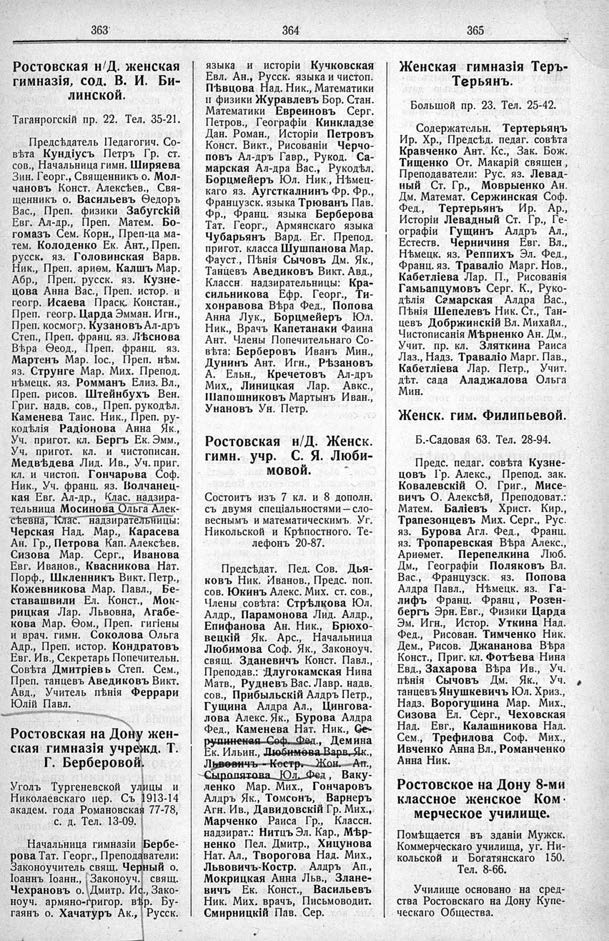

Лист источника 253
Скан

Распознанный текст
363
Ростовская н/Д. женская
гимназія, сод. В. И. Би-
линской.
Таганрогскій пр. 22. Тел. 35-21.
Предсѣдатель Педагогич. Со-
вѣта Кундіусъ Петръ Гр. ст.
сов., Начальница гимн. Ширяева
Зин. Георг., Священникъ о. Мол-
чановъ Конст. Алексѣев., Свя-
щенникъ о. Васильевъ Ѳедоръ
Вас., Преп. физики Забугскій
Евг. Ал-др., Преп. Матем. Бо-
гомазъ Сем. Корн., Преп-ца ма-
тем. Колоденко Ек. Ант., Преп.
русск. яз. Головинская Варв.
Ник., Преп. ариѳм. Калшъ Мар.
Абр., Преп. русск. яз. Кузне-
цова Анна Вас., Преп. истор. и
геогр. Исаева Праск. Констан.,
Преп. геогр. Царда Эмман. Игн.,
Преп. космогр. Кузановъ Ал-дръ
Степ., Преп. франц. яз. Лѣснова
Вѣра Ѳеод., Преп. франц. яз.
Мартенъ Мар. Іос., Преп. нѣм.
яз. Струнге Мар. Мих. Препод.
нѣмецк. яз. Ромманъ Елиз. Вл.,
Преп. рисов. Штейнбухъ Вен.
Григ. надв. сов., Преп. рукодѣл.
Каменева Таис. Ник., Преп. ру-
кодѣлія Радіонова Анна Як.,
Уч. пригот. кл. Бергъ Ек. Эмм.,
Уч. пригот. кл. и чистописан.
Медвѣдева Лид. Ив., Уч. приг.
кл. и чистоп. Гончарова Соф.
Ник., Уч. франц. яз. Волчанец-
кая Евг. Ал-др., Клас. надзира-
тельница Мосинова Ольга Алек-
сѣевна, Клас. надзирательницы:
Черская Над. Мар., Карасева
Ан. Гр., Петрова Кап. Алексѣев.
Сизова Мар. Серг., Иванова
Евг. Иванов., Квасникова Нат.
Порф., Шкленникъ Викт. Петр.,
Кожевникова Мар. Павл., Бе-
ставашвили Ел. Конст., Мок-
рицкая Лар. Львовна, Агабе-
кова Мар. Ѳом., Преп. гигіены
и врач. гимн. Соколова Ольга
Адр., Преп. истор. Кондратовъ
Евг. Ив., Секретарь Попечительн.
Совѣта Дмитріевъ Степ. Сем.,
Преп. танцевъ Аведиковъ Викт.
Авд., Учитель пѣнія Феррари
Юлій Павл.
Ростовская на Дону жен-
ская гимназія учрежд. Т.
Г. Берберовой.
Уголъ Тургеневской улицы и
Николаевскаго пер. Съ 1913-14
академ. года Романовская 77-78,
с. д. Тел. 13-09.
Начальница гимназіи Бербе-
рова Тат. Георг., Преподаватели:
Законоучитель свящ. Черный о.
Іоаннъ Іоанн., Законоуч. свящ.
Чехрановъ о. Дмитр. Ис., Зако-
ноуч. армяно-григор. вѣр. Бу-
гаянъ о. Хачатуръ Ак., Русск.
364
языка и исторіи Кучковская
Евл. Ан., Русск. языка и чистоп.
Пѣвцова Над. Ник., Математики
и физики Журавлевъ Бор. Стан.
Математики Евреиновъ Серг.
Петров., Географіи Кинкладзе
Дан. Роман., Исторіи Петровъ
Конст. Викт., Рисованіи Черчо-
повъ Ал-дръ Гавр., Рукод. Са-
марская Ал-дра Вас., Рукодѣл.
Борцмейеръ Юл. Ник., Нѣмец-
каго яз. Аугсткалнинъ Фр. Фр.,
Французск. языка Трюванъ Пав.
Фр., Франц. языка Берберова
Тат. Георг., Армянскаго языка
Чубарьянъ Вард. Ег. Препод.
пригот. класса Шушпанова Мар.
Фауст., Пѣнія Сычовъ Дм. Як.,
Танцевъ Аведиковъ Викт. Авд.,
Классн. надзирательницы: Кра-
сильникова Ефр. Георг., Ти-
хонравова Вѣра Фед., Попова
Анна Лук., Борцмейеръ Юл.
Ник., Врачъ Капетанаки Фаина
Ант. Члены Попечительнаго Со-
вѣта: Берберовъ Иванъ Мин.,
Дунинъ Ант. Игн., Рѣзановъ
А. Ельн., Кречетовъ Ал-дръ
Мих., Линицкая Лар. Авкс.,
Шапошниковъ Мартынъ Иван.,
Унановъ Ун. Петр.
Ростовская н/Д. Женск.
гимн. учр. С. Я. Люби-
мовой.
Состоитъ изъ 7 кл. и 8 дополн.
съ двумя спеціальностями — сло-
веснымъ и математическимъ. Уг.
Никольской и Крѣпостного. Те-
лефонъ 20-87.
Предсѣдат. Пед. Сов. Дья-
ковъ Ник. Иванов., Предс. поп.
сов. Юкинъ Алекс. Мих. ст. сов.,
Члены совѣта: Стрѣлкова Юл.
Алдр., Парамонова Лид. Алдр.,
Епифанова Ан. Ник., Брюхо-
вецкій Як. Арс., Начальница
Любимова Соф. Як., Законоуч.
свящ. Зданевичъ Конст. Павл.,
Преподав.: Длугокамская Нина
Матв., Рудневъ Вас. Лавр. надв.
сов., Прибыльскій Алдръ Петр.,
Гущина Алдра Ал., Цингова-
лова Алекс. Як., Бурова Алдра
Фед., Каменева Нат. Ник., Ге-
рупинская Соф. Фед., Демина
Ек. Ильин., Любимова Варв. Як.,
Львовичъ - Костр. Жон. Ап.,
Сыропятова Юл. Фед, Ваку-
ленко Мар. Мих., Гончаровъ
Алдръ Як., Томсонъ, Варнеръ
Агн. Ив., Давидовскій Гр. Мих.,
Марченко Раиса Гр., Классн.
надзират.: Нитцъ Эл. Кар., Мѣр-
ненко Пел. Дмитр., Хицунова
Нат. Ал., Творогова Над. Мих.,
Львовичъ-Костр. Алдръ Ап.,
Мокрицкая Анна Льв., Злане-
вичъ Ек. Конст., Васильевъ
Ник. Мих. врачъ, Письмоводит.
Смирницкій Пав. Сер.
365
Женская гимназія Теръ-
Терьянъ.
Большой пр. 23. Тел. 25-42.
Содержательн. Тертерьянъ
Ир. Хр., Предсѣд. педаг. совѣта
Кравченко Ант. Кс., Зак. Бож.
Тищенко От. Макарій священ ,
Преподаватели: Рус. яз. Левад-
ный Ст. Гр., Моврыенко Ан.
Дм. Математ. Сержинская Соф.
Фед., Тертерьянъ Ир. Ар.,
Исторіи Левадный Ст. Гр., Ге-
ографіи Гущинъ Алдръ Ал.,
Естеств. Черничиня Евг. Вл.,
Нѣмецк. яз. Реппихъ Эл. Фед.,
Франц. яз. Траваліо Марг. Нов.,
Кабетліева Лар. П., Рисованія
Гамъапцумовъ Серг. К., Руко-
дѣлія Самарская Алдра Вас.,
Пѣнія Шепелевъ Ник. Ст., Тан-
цевъ Добржинскій Вл. Михайл.,
Чистописанія Мѣрненко Ан. Дм.,
Учит. пр. кл. Зляткина Раиса
Лаз., Надз. Траваліо Марг. Пав.,
Кабетліева Лар. Петр., Учит.
дѣт. сада Аладжалова Ольга
Мин.
Женск. гим. Филипьевой.
Б.-Садовая 63. Тел. 28-94.
Предс. педаг. совѣта Кузне-
цовъ Гр. Алекс., Препод. зак.
Ковалевскій О. Григ., Мисе-
вичъ О. Алексѣй, Преподоват.:
Матем. Баліевъ Христ. Кир.,
Трапезонцевъ Мих. Серг., Рус.
яз. Бурова Агл. Фед., Франц.
яз. Тропаревская Вѣра Алекс.,
Ариѳмет. Перепелкина Люб.
Дм., Географіи Поляковъ Вл.
Вас., Французск. яз. Попова
Алдра Павл., Нѣмецк. яз. Га-
лифъ Франц. Франц., Розен-
бергъ Эрн. Евг., Физики Царда
Эм. Игн., Истор. Уткина Над.
Фед., Рисован. Тимченко Ник.
Дем., Рисов. Джананова Вѣра
Конст., Приг. кл. Фотѣева Нина
Евд., Захарова Вѣра Ив., Уч.
пѣнія Сычовъ Дм. Як., Уч.
танцевъ Янушкевичъ Юл. Хриз.,
Надз. Ворогушина Мар. Мих.,
Сизова Ел. Серг., Чеховская
Над. Евг., Калашникова Над.
Сем., Трефилова Соф. Мих.,
Ивченко Анна Вл., Романченко
Анна Ник.
Ростовское на Дону 8-ми
классное женское Ком-
мерческое училище.
Помѣщается въ зданіи Мужск.
Коммерческаго училища, уг. Ни-
кольской и Богатянскаго 150.
Тел. 8-66.
Училище основано на сред-
ства Ростовскаго на Дону Купе-
ческаго Общества.